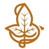

Интерактивные метки на изображении | ArPic
Карта Средиземья, на которой происходят события повести «Хоббит, или Туда и обратно», трилогии «Властелин колец», а также «Сильмариллиона» и «Неоконченных преданий Нуменора и Средиземья».
Шир — государство хоббитов.
В стране отсутствует какая-либо промышленность, но хорошо развито сельское хозяйство. Прообразом Шира послужил миф о «старой доброй Англии», которую еще не затронула масштабная индустриализация.
Мордор — государство Саурона располагался на юго-востоке от Мглистых гор.
Его населяли орки, тролли и люди из числа союзников Темного Властелина. Страна отличалась скудной природой — на ее земле росли только редкие травы и низкорослые кустарники. На территории Мордора находилась Роковая гора — вулкан, в котором Саурон выковал Кольцо Всевластия.
Гондор — королевство людей расположено на юго-западе от Мглистых гор. Его жители сражались с войсками Саурона, истерлингами — народами восточной части Средиземья — и харадримами — народами южной части континента.
Ривенделл — убежище эльфийских правителей на западном склоне Мглистых гор. Оно оставалось невидимым для сил Саурона благодаря одному из Колец власти. В Ривенделле находили защиту лидеры людей, эльфов, а также следопыты и члены Братства Кольца.
Эребор — величественное королевство гномов внутри Одинокой Горы, расположенной в северо-восточной части Средиземья, к югу от восточной оконечности Серых Гор.
Документация:
Данный скрипт позволяет создавать адаптивные изображения с интерактивными метками.
Скрипт по умолчанию поддерживает до 50 меток на изображении.
Для начала работы необходимо подключить файлы artag.css и artag.js
Скачать исходники можно на GitHub
В HTML документе создаем блок с интерактивными метками на изображении:
<div class="ar-inter-block" id="ar-inter">
<div class="left">
<div class="ar-img">
<span></span> <!--метка на изображении-->
<span></span>
</div>
</div>
<div class="right">
<div class="ar-btn-title">
<button></button> <!--кнопка заголовок-->
<button></button>
<button></button>
</div>
<div class="ar-desc">
<div></div> <!--текстовое описание-->
<div></div>
<div></div>
</div>
</div>
</div>
- В id="ar-inter" прописываем идентификатор блока с интерактивным избражением (например ar-inter1, ar-inter2 ...)
Блоков с интерактивными изображениями может быть несколько на странице, поэтому не забывайте менять id - Тег span отвечает за конкретную метку на изображении (является необязательным), в них не надо ничего записывать.
Вы можете создать до 50 меток (тегов span) - Блок class="right" является необязательным.
Вы можете создать только изображение с метками, без заголовков и текстового описания.
Или создать изображение описанием, но без меток, ничего дополнительно настраивать не придется. - Тег button отвечает за кнопку-заголовок (является необязательным). В тег button (начиная со второго по счету) необходимо записать текстовое содержимое.
Самый первый тег button является кнопкой возврата к исходному состоянию блока, его не надо редактировать. - Тег div — это контейнер для подробного описания каждой метки и каждого заголовка (является не обязательным).
В данном контейнере Вы можете разместить текст, ссылки, изображение и т.д.
Самый первый тег div будет отображаться по умолчанию в исходном состоянии блока. - Не рекомендуется создавать или менять классы у элементов.
При необходимости подключайтесь к уже созданным классам через CSS и кастомизируйте под собственный проект.
В CSS необходимо настроить изображение и позицию меток:
Вы можете записать следующие строки в своем файле CSS:
- Указываем путь до главного изображения
Указывайте правильный ID (#ar-inter) для настраиваемого блока.
#ar-inter .ar-img{
background: url('путь до изображения');
}
- Указываем увеличение и положение изображения при активации первой метки.
При необходимости настраиваем положение для остальных меток (.ar-btn1, .ar-btn2 . . . .ar-btn49, .ar-btn50)
#ar-inter .ar-img.ar-btn1 {
background-size: 460% !important;
background-position-x: 25% !important;
background-position-y: 20% !important;
}
- Вы можете подставлять разные изображения на каждую метку.
Для этого необходимо указать путь до изображения и его позицию для нужной метки.
При необходимости настраиваем и для остальных меток (.ar-btn1, .ar-btn2 . . . .ar-btn49, .ar-btn50)
#ar-inter .ar-img.ar-btn1 {
background-image: url('путь до изображения');
background-size: 100% !important;
background-position-x: 0% !important;
background-position-y: 0% !important;
}
- Указываем положение метки на изображении.
При необходимости настраиваем остальные метки (.ar-btn1, .ar-btn2 . . . .ar-btn49, .ar-btn50)
#ar-inter .ar-img .ar-btn5{
left: 27%;
bottom: 70%;
}
- Вы можете настроить высплывающую подсказку при наведении на метку.
При необходимости настройте содержимое content для каждой метки (.ar-btn1, .ar-btn2 . . . .ar-btn49, .ar-btn50)
#ar-inter .ar-img .ar-btn1::before{
content: 'Шир';
}
В JS необходимо вызвать функцию arInter():
- Вызов функции Вы можете прописать в любом js файле, подключенным в HTML после artag.js
- Вызывать функцию arInter() необходимо для каждого блока
- Обязательные атрибуты функции arInter(): id блока, ширина изображения, высота изображения
Указываем ширину и высоту исходного изображения, чтобы корректно работала адаптивность
arInter('#ar-inter', 2560, 2005);

Пример с разными изображениями на каждой метке:
Карта Средиземья, на которой происходят события повести «Хоббит, или Туда и обратно», трилогии «Властелин колец», а также «Сильмариллиона» и «Неоконченных преданий Нуменора и Средиземья».
Шир — государство хоббитов.
В стране отсутствует какая-либо промышленность, но хорошо развито сельское хозяйство. Прообразом Шира послужил миф о «старой доброй Англии», которую еще не затронула масштабная индустриализация.
Мордор — государство Саурона располагался на юго-востоке от Мглистых гор.
Его населяли орки, тролли и люди из числа союзников Темного Властелина. Страна отличалась скудной природой — на ее земле росли только редкие травы и низкорослые кустарники. На территории Мордора находилась Роковая гора — вулкан, в котором Саурон выковал Кольцо Всевластия.
Гондор — королевство людей расположено на юго-западе от Мглистых гор. Его жители сражались с войсками Саурона, истерлингами — народами восточной части Средиземья — и харадримами — народами южной части континента.
Ривенделл — убежище эльфийских правителей на западном склоне Мглистых гор. Оно оставалось невидимым для сил Саурона благодаря одному из Колец власти. В Ривенделле находили защиту лидеры людей, эльфов, а также следопыты и члены Братства Кольца.
Эребор — величественное королевство гномов внутри Одинокой Горы, расположенной в северо-восточной части Средиземья, к югу от восточной оконечности Серых Гор.
Пример без меток на изображении:
Карта Средиземья, на которой происходят события повести «Хоббит, или Туда и обратно», трилогии «Властелин колец», а также «Сильмариллиона» и «Неоконченных преданий Нуменора и Средиземья».
Шир — государство хоббитов.
В стране отсутствует какая-либо промышленность, но хорошо развито сельское хозяйство. Прообразом Шира послужил миф о «старой доброй Англии», которую еще не затронула масштабная индустриализация.
Мордор — государство Саурона располагался на юго-востоке от Мглистых гор.
Его населяли орки, тролли и люди из числа союзников Темного Властелина. Страна отличалась скудной природой — на ее земле росли только редкие травы и низкорослые кустарники. На территории Мордора находилась Роковая гора — вулкан, в котором Саурон выковал Кольцо Всевластия.
Гондор — королевство людей расположено на юго-западе от Мглистых гор. Его жители сражались с войсками Саурона, истерлингами — народами восточной части Средиземья — и харадримами — народами южной части континента.
Ривенделл — убежище эльфийских правителей на западном склоне Мглистых гор. Оно оставалось невидимым для сил Саурона благодаря одному из Колец власти. В Ривенделле находили защиту лидеры людей, эльфов, а также следопыты и члены Братства Кольца.
Эребор — величественное королевство гномов внутри Одинокой Горы, расположенной в северо-восточной части Средиземья, к югу от восточной оконечности Серых Гор.
Пример без блока с описанием:
Пример без кнопок - заголовков:
Карта Средиземья, на которой происходят события повести «Хоббит, или Туда и обратно», трилогии «Властелин колец», а также «Сильмариллиона» и «Неоконченных преданий Нуменора и Средиземья».
Шир — государство хоббитов.
В стране отсутствует какая-либо промышленность, но хорошо развито сельское хозяйство. Прообразом Шира послужил миф о «старой доброй Англии», которую еще не затронула масштабная индустриализация.
Мордор — государство Саурона располагался на юго-востоке от Мглистых гор.
Его населяли орки, тролли и люди из числа союзников Темного Властелина. Страна отличалась скудной природой — на ее земле росли только редкие травы и низкорослые кустарники. На территории Мордора находилась Роковая гора — вулкан, в котором Саурон выковал Кольцо Всевластия.
Гондор — королевство людей расположено на юго-западе от Мглистых гор. Его жители сражались с войсками Саурона, истерлингами — народами восточной части Средиземья — и харадримами — народами южной части континента.
Ривенделл — убежище эльфийских правителей на западном склоне Мглистых гор. Оно оставалось невидимым для сил Саурона благодаря одному из Колец власти. В Ривенделле находили защиту лидеры людей, эльфов, а также следопыты и члены Братства Кольца.
Эребор — величественное королевство гномов внутри Одинокой Горы, расположенной в северо-восточной части Средиземья, к югу от восточной оконечности Серых Гор.
Пример без описания: